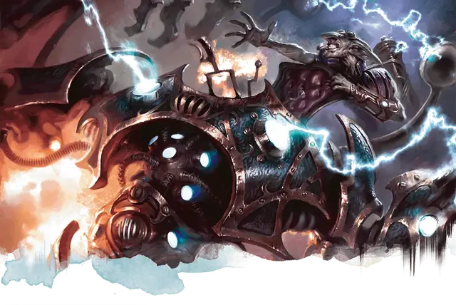

Грузоподъёмный механизм
Loading Rig
Большой Конструкт, без мировоззрения

Класс Доспеха 18 (природный доспех)
Хиты 39 (6к10 + 6)
Скорость 25 футов
| мод | спас | ||
|---|---|---|---|
| СИЛ | 18 | +4 | +4 |
| ЛОВ | 11 | +0 | +0 |
| ТЕЛ | 13 | +1 | +1 |
| мод | спас | ||
|---|---|---|---|
| ИНТ | 1 | −5 | −5 |
| МДР | 3 | −4 | −4 |
| ХАР | 1 | −5 | −5 |
Иммунитет к урону психическая энергия, яд
Иммунитет к состояниям глухота, испуг, истощение, окаменение, ослепление, отравление, очарование, паралич
Чувства слепое зрение 60 футов (слеп за его пределами), пассивное Восприятие 6
Опасность 1 (200 опыта)
Бонус мастерства +2
Особенности
Восприимчивость к антимагии. Механизм недееспособен, пока находится в пределах области преграды магии [antimagic field]. Став целью рассеивания магии [dispel magic], механизм должен преуспеть в спасброске Телосложения Сл спасброска заклинателя, иначе потеряет сознание на 1 минуту.
Неустойчивый. Если механизм получает урон, он должен преуспеть в спасброске Телосложения Сл 10, иначе станет недееспособным со скоростью 0 до тех пор, пока существо действием не активирует его успешной проверкой Интеллекта (Магия) Сл 10.
Действия
Мультиатака. Доспех совершает две рукопашные атаки.
Размашистый удар. . Рукопашная атака оружием: +6 к попаданию, досягаемость 5 футов, одна цель. Попадание: 7 (1к6 + 4) дробящего урона.
Описание
Сиденье, встроенное в верхнюю часть механизма, содержит ряд небольших пластин и рычагов. Существо, сидящее в сиденье, может попытаться совершить проверку Интеллекта (Магия) Сл 10, чтобы понять, как нажать на пластины в правильной последовательности, чтобы активировать или деактивировать установку. Нажатие пластин требует действия. Пока механизм активирован, существо, сидящее в кресле, может управлять им с помощью рычагов. Грузоподъёмный механизм перемещается по команде управляющего, и управляющий может использовать действие, чтобы направить механизм на совершение действий Рывок, Отход или Уклонение, а также на совершение действий Мультиатака или Размашистый удар, как указано в его блока характеристик.
Существо, обладающее инструментами ремонтника, может попытаться починить повреждения грузоподъёмного механизма. Потратив 1 час на ремонт, существо совершает проверку Интеллекта (Магия) Сл 15. Если проверка успешна, механизм восстанавливает 1к6 хитов